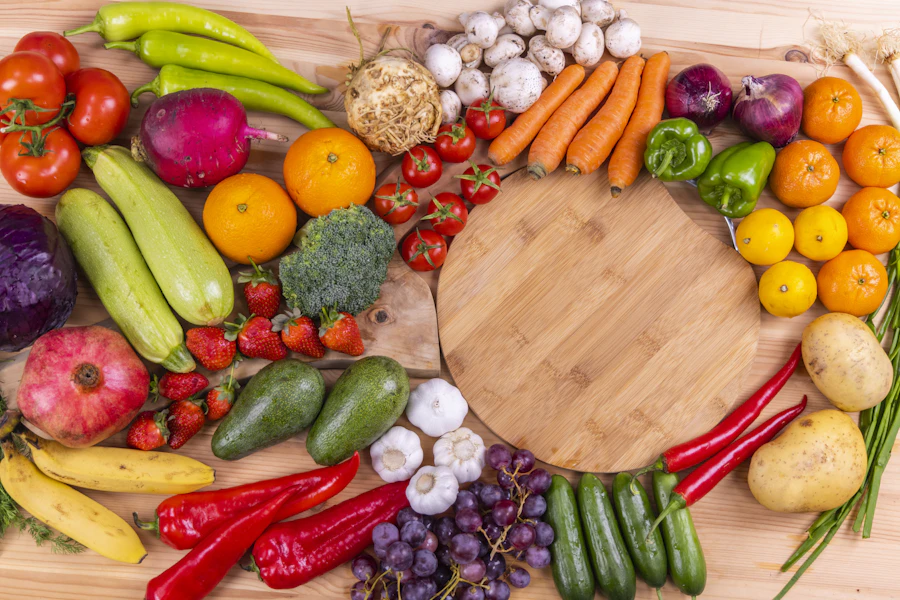

Seu acompanhamento de saúde, todos os dias
Sua saúde começa no próximo ponto.
Pequenas escolhas diárias, como um copo d'água, um prato colorido e uma caminhada, somam grandes resultados. O PontoFit ajuda você a acompanhar cada passo.
- 58 receitas
- Painel com sua meta
- Acompanhamento da gestação
- Relatório para o médico
Feito para cuidar de você
Por que usar o PontoFit para acompanhar sua saúde?
Porque cuidar de si não precisa ser complicado nem solitário. Em vez de anotações espalhadas e lembretes esquecidos, você tem um lugar só que organiza tudo e mostra, todos os dias, o quanto já avançou.
-
Você não está sozinho nessa
Cuidar da saúde dá certo quando vira rotina. O PontoFit lembra, organiza e comemora cada avanço com você, no seu ritmo e sem cobrança.
-
Veja o seu progresso de verdade
Peso, meta, IMC e o quanto falta, calculados automaticamente. Quando os números mostram o caminho, fica mais fácil continuar.
-
Nunca mais esqueça uma dose
Contagem regressiva para cada medicamento e aviso quando a dose está chegando. A gestante ainda recebe alertas de medicamentos que pedem cuidado.
-
Leve tudo para a consulta
Um relatório organizado com seus dados, peso, metas e medicamentos, pronto para imprimir ou mostrar ao médico e ao nutricionista.
Seja para emagrecer, ganhar disposição, acompanhar um tratamento ou viver uma gestação tranquila: o PontoFit acompanha você em cada fase.
Quero começarTudo em um só lugar
Tudo o que você encontra no PontoFit
Ferramentas pensadas para o seu dia a dia, do café da manhã à consulta médica.
-
Painel do dia
Meta, peso, próxima dose, receita do dia e conquistas assim que você entra.
-
58 receitas
Café da manhã, almoço, lanches, doces e bebidas, com filtros e favoritas.
-
Evolução e meta
Gráfico do peso, ritmo por semana e a data estimada para chegar à meta.
-
Medicamentos
Doses, intervalos e contagem regressiva para a próxima aplicação.
-
Gestação semana a semana
Tamanho do bebê, ganho de peso ideal, exames do pré-natal e alertas de medicamentos.
-
Vitaminas e nutrientes
Para que serve cada vitamina, onde encontrar nos alimentos e quando suplementar.
-
Água e conquistas
Copo do dia, sequência de dias na meta e medalhas por cada marco.
-
Relatório do paciente
Seus dados organizados para imprimir ou salvar em PDF e levar à consulta.
Seu painel
Ao entrar, o resumo do seu dia já está pronto
Quanto falta para a meta, como está seu peso, quando é a próxima dose, a água de hoje e uma receita escolhida para você. Sem planilha, sem conta de cabeça.
Ver o meu painelSimples assim
Como funciona em 3 passos
-
1
Crie sua conta
Nome, e-mail, CPF e senha. Leva menos de um minuto.
-
2
Escolha seu plano
A partir de R$ 4,99, com Pix ou cartão. O acesso é liberado assim que o pagamento é aprovado.
-
3
Acompanhe todo dia
Registre seu peso, sua água e suas doses. O painel faz as contas e mostra seu progresso.
Água: o hábito mais simples (e mais esquecido)
Cerca de 60% do corpo é água. Ela regula a temperatura, ajuda na digestão, transporta nutrientes e mantém a energia em dia. Muitas vezes, aquela fome fora de hora ou o cansaço no meio da tarde são sinais de que você bebeu pouca água.
Dica: Deixe uma garrafa sempre à vista e beba um copo ao acordar e antes de cada refeição.
Por que colocar mais legumes no prato?

-
Fibras que dão saciedade
Ajudam você a se sentir satisfeito por mais tempo e a manter o intestino regulado.
-
Vitaminas e minerais
Vitamina A, C, potássio e ferro que fortalecem a imunidade e a disposição.
-
Antioxidantes
Os legumes coloridos ajudam a proteger as células do desgaste do dia a dia.
-
Poucas calorias, muito volume
Você come bem, com o prato cheio, sem exagerar nas calorias.
-
Coração mais saudável
Uma alimentação rica em vegetais está associada a melhor controle da pressão e do colesterol.
- Legumes e verduras 50%
- Proteínas 25%
- Carboidratos 25%
Monte um prato que trabalha por você
Uma forma prática de equilibrar as refeições: metade do prato com legumes e verduras, um quarto com proteína (frango, peixe, ovos, feijão) e um quarto com carboidrato, de preferência integral (arroz, batata, mandioca).
Pequenos números, grandes mudanças
-
30 min
de caminhada por dia
-
7 a 9 h
de sono por noite
-
5 cores
diferentes no prato
-
2 L
de água como referência diária (varia de pessoa para pessoa)
Planos
Pague uma vez e use tudo pelo período escolhido. Sem renovação automática: quando quiser continuar, é só pagar outro plano.
-
7 dias
R$ 4,99
7 dias de acesso completo. Bom para conhecer o PontoFit.
- Livro com 58 receitas, filtros e favoritas
- Ficha completa com idade e IMC automáticos
- Gráfico de evolução do peso e metas
- Lembrete de dose com contagem regressiva
-
50% na primeira compra
30 dias
De R$ 15,00R$ 7,50
30 dias de acesso completo. Desconto na primeira compra (um por CPF); depois, R$ 15,00.
- Livro com 58 receitas, filtros e favoritas
- Ficha completa com idade e IMC automáticos
- Gráfico de evolução do peso e metas
- Lembrete de dose com contagem regressiva
-
Mais econômico
6 meses
R$ 50,00
6 meses de acesso completo. Sai por cerca de R$ 8,33 por mês.
- Livro com 58 receitas, filtros e favoritas
- Ficha completa com idade e IMC automáticos
- Gráfico de evolução do peso e metas
- Lembrete de dose com contagem regressiva
Dúvidas
Perguntas frequentes
Preciso de cartão de crédito?
Não. Você pode pagar com Pix, direto no site, ou com cartão pela página segura do Mercado Pago.
O plano renova sozinho?
Não. Os planos são de pagamento único: 7 dias, 30 dias ou 6 meses. Quando quiser continuar, é só pagar outro plano, e os dias são somados.
Como funciona o desconto de 50%?
A primeira compra do plano de 30 dias sai por R$ 7,50. O desconto vale uma vez por CPF.
Posso usar durante a gravidez?
Sim. A seção Gestação acompanha a gravidez semana a semana, com o tamanho do bebê, o ganho de peso recomendado, os exames do pré-natal e alertas de medicamentos. Ela complementa, mas não substitui, o pré-natal.
O PontoFit substitui meu médico ou nutricionista?
Não. O PontoFit ajuda a organizar e acompanhar sua rotina. As decisões sobre tratamento, dieta e medicamentos são sempre do seu médico ou nutricionista, e o relatório ajuda você a levar tudo para a consulta.
Meus dados ficam protegidos?
Sim. Seus dados ficam guardados com acesso restrito: cada pessoa vê apenas a própria conta. O CPF é usado só para identificar a conta e nos pagamentos.
Acompanhe sua evolução de perto
Registre seus dados, acompanhe seu peso e nunca mais esqueça uma dose. Tudo em um só lugar, a partir de R$ 4,99.